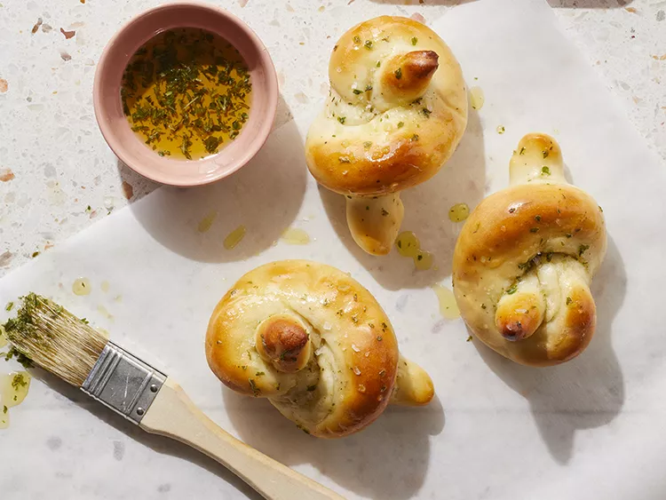

Spaghetti

Description
Homemade garlic knots just as good as those you'll get in restaurants. The
base for the knots is a simple dough made with Greek yogurt.
- 1 ¾ cups self-rising flour, plus more for kneading
- ¾ teaspoon garlic powder
- ½ teaspoon salt
- ¼ teaspoon Italian seasoning
- 1 cup plain whole-milk Greek-style yogurt
- 1 tablespoon unsalted butter, melted
- 1 tablespoon olive oil
- ½ teaspoon dried parsley
- flaky sea salt, for garnish
- Step 1: Preheat the oven to 425 degrees F (220 degrees C). Line a baking sheet
with parchment paper or a silicone baking mat.
-
Step 2: Stir together flour and 1/4 teaspoon each garlic powder, salt, and
Italian seasoning in a bowl. Stir in yogurt until mixture forms a shaggy dough.
Transfer dough to a well-floured work surface. Knead until mostly smooth, 3 to
4 minutes. If needed, add additional flour 1 teaspoon at a time to keep dough
from being too sticky.
-
Step 3: Shape dough into a ball; press down gently to form a disk. Divide dough
into 8 even wedges (a bench scraper is handy). Roll each wedge into a rope about
10 inches long. Tie into knots. Arrange knots about 2 inches apart on the
prepared baking sheet.
-
Step 4: Bake until knots are lightly browned, about 15 minutes.
-
Step 5: Meanwhile, whisk together melted butter, oil, parsley, and remaining
1/2 tsp. garlic powder and 1/4 tsp. salt in a small bowl. Brush still-warm knots
with butter mixture and sprinkle with flaky salt. Cool 5 minutes before serving.
Store cooled knots in an airtight container at room temperature up to 2 days.